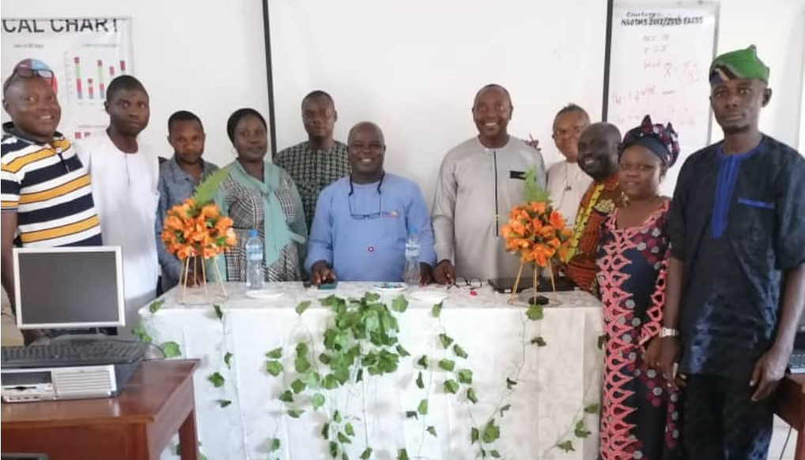

The R Consortium had a conversation with Anietie Edem Udokang, who is the founder and organizer of the Offa R Users Group (ORUG). He discussed the emerging local R community and the use of R for his research in time series analysis.

The Offa R Users Group has a Meetup coming up on March 26th, 2024, titled “Test for the Assumptions of Linear Regression Using R.” The group is also seeking individuals to serve as guest speakers for their online events.
Please share about your background and involvement with the RUGS group.
My name is Anietie Edem Udokang, and I am a chief lecturer at the Federal Polytechnic Offa. I hold a Master of Science degree in Statistics. It was during my postgraduate studies that my supervisor introduced me to R, which was around 2012. Since then, I’ve been using R and have discovered that it’s far superior to some of the other software programs I had previously used.
I have found that interacting with others and utilizing specific features, such as the ability to download applications, has been incredibly beneficial to my analysis work. These special packages have helped me greatly, and I believe it is important to attach relevant packages when organizing data. This experience has made me passionate about using R for data analysis.
Ever since I began using R, I have had the privilege of engaging with a diverse group of individuals, including data scientists and software users. These interactions have led me to the realization that to continue growing and learning, it would be beneficial to establish a user group within our community. Initially, we called it the “Fedpofa R Users Group,” but later changed the name to “Offa R Users Group.” We have been organizing meetings, providing training, and engaging in other activities to keep the community vibrant.

Can you share what the R community is like in Offa?
R is not limited to academic use, but it is also used in industry. The reason for this is that polytechnics act as a bridge between the industry and academic institutions. If the students have a good grasp of how to use R, it means that industry will be directly or indirectly affected. Consultants often visit our ORUG and ask for some analysis, which we provide using R. Additionally, students also use R for their projects.
I use R for many of my publications. R has gained a lot of popularity, not only within our institution but also among sister institutions in the area. Some departments have even made R the only software that students are required to use for analysis.

What industry are you currently in? How do you use R in your work?
I am in the education sector, and I use R for my work in time series analysis, which is my area of specialization. I rely on TSA, tseries and other related time series packages to carry out my work. For example, I used R for Modeling the Residuals of Financial Time Series with Missing Values for Risk Measures, which was my MSc project. I have also used R in the Application of the Seasonal Autoregressive Moving Average Model to Analyze and Forecast the Food Price Index (free registration required). Additionally, I used R in a paper titled “Volatility of Exchange Rates in Nigeria: An Investigation of Risk on Investment.” In another innovative project was Modelling Circular Time Series with Applications. These are just a few examples of the papers and research where I’ve personally used R.
You have a Meetup titled Test for the Assumptions of Linear Regression Using R, can you share more on the topic covered? Why this topic?
Some authors use regression models without checking whether the assumptions hold or not. Instead of carrying out tests to confirm this, they assume that the model is valid if the assumptions are fulfilled. This topic aims to highlight the importance of carrying out such tests to ensure reliable and comprehensive results. Lack of adherence to the assumptions may lead to inaccurate conclusions. The focus will be on commonly used tests for normality, linearity, autocorrelation, heteroscedasticity/homoscedasticity, and multicollinearity, with illustrative examples using R.

I appreciate the R Consortium for their valuable RUGs grant assistance in 2022. With this grant, I could open two other user groups: the Ilorin R Users Group and the Kwara Environmental Statistics R Group. I also want to express my gratitude to the R Consortium for sponsoring my Meetup subscription and covering other minor expenses in 2022. The subscription is still ongoing, and I hope that we can continue our partnership to promote the use of R in our community.
I would like to request for speakers to present at our R User Group. We are currently seeking speakers for our upcoming events and would be delighted to welcome speakers from all over the world to share their R-related knowledge with us.
How do I Join?
R Consortium’s R User Group and Small Conference Support Program (RUGS) provides grants to help R groups organize, share information, and support each other worldwide. We have given grants over the past four years, encompassing over 68,000 members in 33 countries. We would like to include you! Cash grants and meetup.com accounts are awarded based on the intended use of the funds and the amount of money available to distribute.